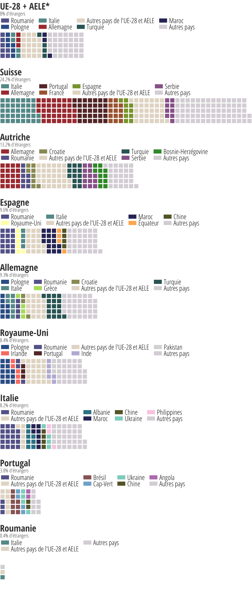

Si ces pays avaient 1000 habitants, leur population étrangère se composerait de....
Nationalité des ressortissants ne possédant pas la citoyenneté du pays dans lequel ils résident en 2015. Les nationalités de l'UE et l'AELE sont disposées sur la gauche du graphique, suivent ensuite les citoyens des autres pays.
1 carré = 1 personne. Par mille habitants
